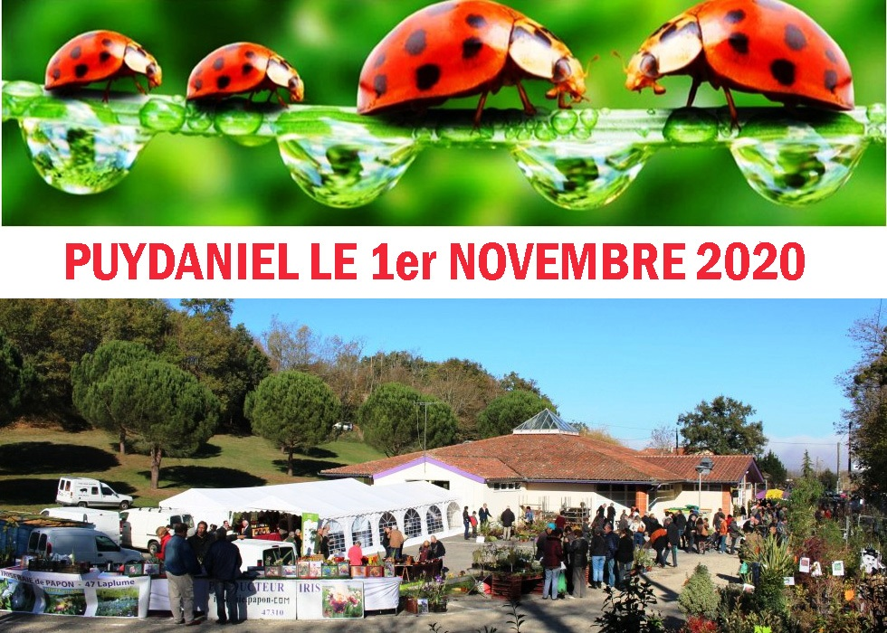

Marchés et foires
Marché de Noël à Pins-Justaret

Le Marché de Noël à Pins-Justaret aura lieu le 28 novembre 2020 de 10h00 à 22h00 sur la place René Loubet en plein air.
Foire aux plantes, arbres, fruitiers anciens, produits régionaux, artisanat
Rendez-vous des professionnels et des amoureux des plantes, des arbres, fruitiers anciens de l’artisanat et du goût.